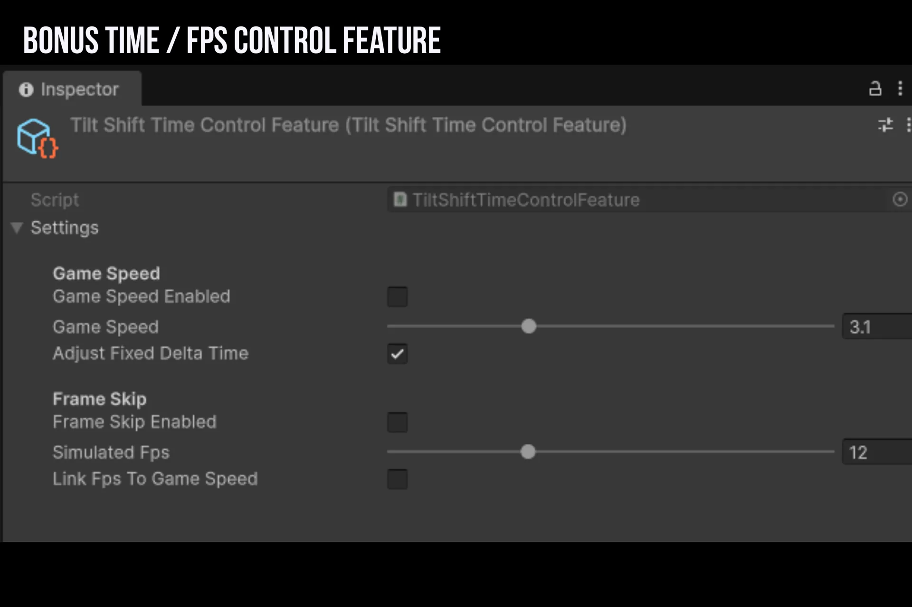
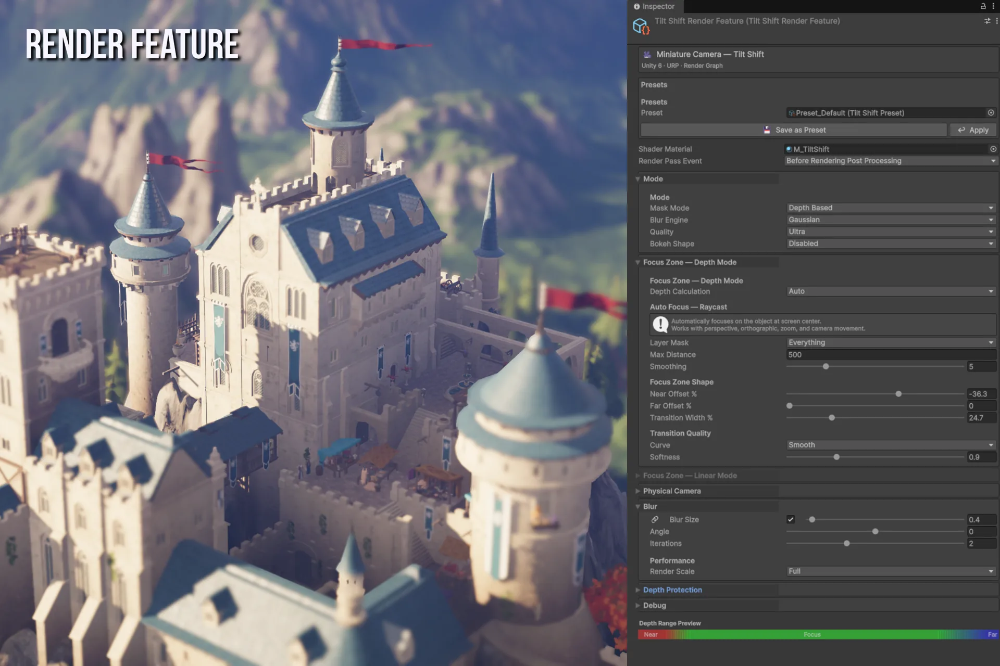
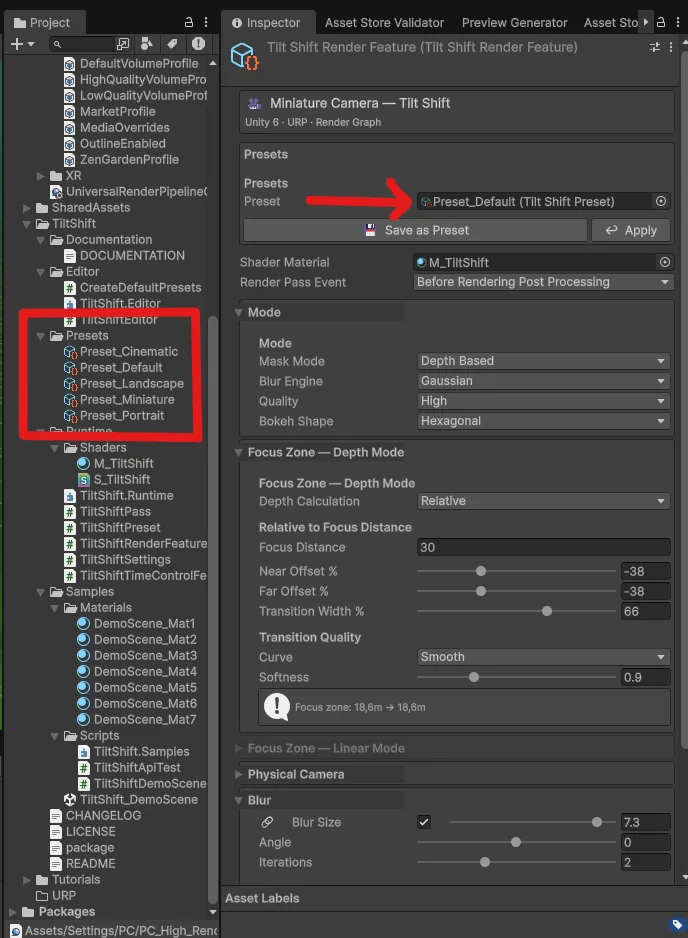
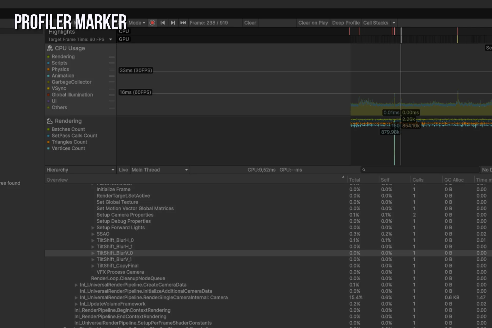
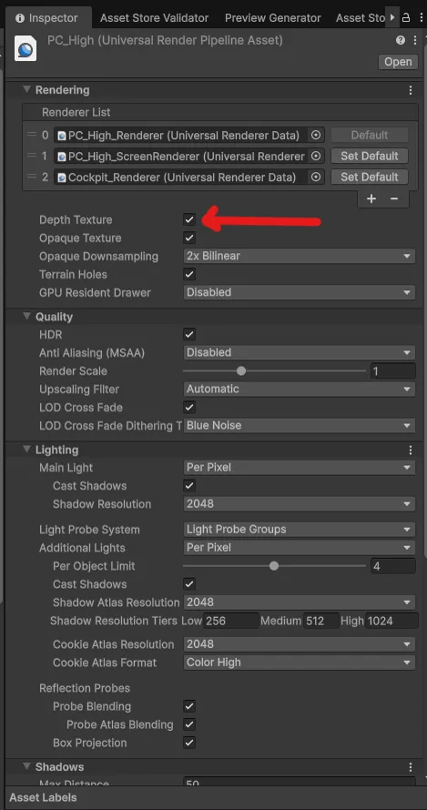

Overview
Miniature Camera is a depth-of-field post-processing effect for Unity 6 URP, built entirely on the Render Graph API. It supports two visual modes (depth-based 3D DoF and screen-space linear gradient), three blur algorithms, auto-focus via screen-center raycast, game speed control, and frame-rate simulation for miniature / stop-motion looks.
Everything is configurable from the inspector, the Scene View overlay, or at runtime through a clean scripting API.
Features
| Feature | Details |
|---|---|
| Blur Modes | Depth-Based (3D DoF), Linear Gradient (photo tilt-shift) |
| Blur Engines | Gaussian, Kawase, Dual Kawase |
| Blur Quality | Low, Medium, High, Ultra |
| Bokeh Shapes | Disabled, Circle (8-dir), Hexagonal (6-dir) |
| Depth Calculation | Absolute, Relative, Camera Relative, Auto (raycast) |
| Transition Curves | Linear, Smooth, Quadratic, Cubic |
| Physical Camera | Circle of Confusion formula (f-stop, focal length, sensor height) |
| Depth Protection | Bilateral rejection to prevent color bleeding at depth edges |
| Render Scale | Full, Half, Quarter resolution blur pass |
| Time Control | Game speed (Time.timeScale) + frame-rate simulation in a single feature |
| Presets | ScriptableObject assets, saveable and loadable from inspector or code |
| Scripting API | Full runtime control over focus, blur, mode, quality, and physical camera |
| Debug Mode | Color overlay that visualizes focus zones |
| Scene View | Optional effect preview in the Scene View camera |
Requirements
| Dependency | Minimum Version |
|---|---|
| Unity | 6.3 (6000.3.x) or higher |
| Universal RP | 17.x (bundled with Unity 6) |
| Render Graph | Enabled (default in Unity 6 URP) |
| Depth Texture | Enabled in URP Renderer settings |
| Shader Model | SM 3.5 |
| Platform | All platforms supported by URP |
The Render Graph API (RecordRenderGraph) is required. This package does not support the legacy Execute() path or Unity 2021 / 2022 LTS. Tested on Unity 6.3, 6.4, and 6.5.
Depth Texture must be enabled on your URP Renderer asset: select the Renderer, then under Rendering, check Depth Texture. Without it, the depth buffer is unavailable and the Depth Based blur mode cannot compute focus zones.
Installation
Via Unity Package Manager
- Open Window > Package Manager
- Click + then Add package from disk...
- Navigate to
TiltShift/package.json - Click Open
Manual
Copy the Assets/TiltShift folder into your project's Assets directory.
Setup after install
- Select your URP Renderer asset (usually in
Settings/) - Under Rendering, ensure Depth Texture is enabled
- Click Add Renderer Feature
- Select Miniature Camera Render Feature
- Assign the
M_TiltShiftmaterial fromTiltShift/Runtime/Shaders/ - Optionally add Miniature Camera Time Control Feature below it for game speed and frame skip
Quick Start
Minimal setup
URP Renderer asset
Renderer Features
Miniature Camera Render Feature <- add this
Miniature Camera Time Control Feature <- optional (game speed + frame skip)Step 1 — Add the feature via the URP Renderer inspector.
Step 2 — Assign the material: Assets/TiltShift/Runtime/Shaders/M_TiltShift.mat
Step 3 — Play. Use the inspector sliders to configure the effect.
Scripting Quick Start
using TiltShift;
using UnityEngine;
using UnityEngine.Rendering.Universal;
public class DoFController : MonoBehaviour
{
private TiltShiftRenderFeature feature;
void Start()
{
feature = GetTiltShiftFeature();
}
void Update()
{
float dist = Vector3.Distance(Camera.main.transform.position, target.position);
feature.SetFocusCenter(dist);
}
private TiltShiftRenderFeature GetTiltShiftFeature()
{
var urpAsset = UnityEngine.Rendering.GraphicsSettings.currentRenderPipeline
as UniversalRenderPipelineAsset;
var field = typeof(UniversalRenderPipelineAsset)
.GetField("m_RendererDataList",
System.Reflection.BindingFlags.NonPublic | System.Reflection.BindingFlags.Instance);
var list = field?.GetValue(urpAsset) as ScriptableRendererData[];
foreach (var data in list)
foreach (var feat in data.rendererFeatures)
if (feat is TiltShiftRenderFeature ts) return ts;
return null;
}
}Architecture
URP Renderer Asset
Renderer Features
TiltShiftRenderFeature inspector + scripting API
TiltShiftSettings serialized parameters
TiltShiftPass (internal) render graph recording
TiltShiftTimeControlFeature game speed + frame-rate simulation
TiltShiftPreset ScriptableObject assets (.asset files)Frame execution order per camera
- URP renders the scene normally
TiltShiftPass.RecordRenderGraph()adds blur passes to the graph- URP executes the graph — the blur result replaces
activeColorTexture TiltShiftTimeControlFeatureoptionally replaces the frame with a cached one (frame skip)- URP presents the final image
TiltShiftRenderFeature
Namespace: TiltShift · Inherits: ScriptableRendererFeature · File: Runtime/TiltShiftRenderFeature.cs
The main entry point. Add this to your URP Renderer asset. It owns all effect settings and exposes the scripting API.
Properties
| Property | Type | Description |
|---|---|---|
settings | TiltShiftSettings | All effect parameters, serialized to the Renderer asset. |
Lifecycle
| Method | When Called | What it Does |
|---|---|---|
Create() | On asset load, domain reload | Instantiates TiltShiftPass. Skipped if no material assigned. |
AddRenderPasses() | Every frame, every camera | Enqueues the pass. Skips if material is null. In Auto Focus mode, also computes the center-screen raycast (game camera only, once per frame via Time.frameCount guard) and updates autoFocusCurrentDistance. |
Dispose() | On destroy or domain reload | Nothing to release in this class. |
Scripting API — Focus (Depth Mode)
| Method | Signature | Description |
|---|---|---|
SetFocusCenter | (float depth) | Centers the focus zone at the given depth, preserving its width. |
SetFocusRange | (float near, float far) | Sets near and far focus boundaries in world units. |
SetFocusNear | (float depth) | Sets the near boundary only. |
SetFocusFar | (float depth) | Sets the far boundary only. |
SetFocusTransitions | (float nearSmooth, float farSmooth) | Sets transition zone widths in world units. |
Scripting API — Focus (Linear Gradient Mode)
| Method | Signature | Description |
|---|---|---|
SetGradientCenter | (float normalizedY) | Vertical center of the focus band (0 to 1). |
SetGradientShape | (float width, float softness) | Band width and edge softness (0 to 1 each). |
SetGradientAngle | (float degrees) | Band rotation (-90 to +90 degrees). |
Scripting API — Blur
| Method | Signature | Description |
|---|---|---|
SetBlurSize | (float h, float v) | Sets horizontal and vertical blur radii independently (0 to 20 px). |
SetBlurSize | (float size) | Sets a uniform blur radius for both axes (0 to 20 px). |
SetBlurAngle | (float degrees) | Rotates the blur kernel (-90 to +90 degrees). |
Scripting API — Mode Switches
| Method | Signature | Description |
|---|---|---|
SetBlurMode | (BlurMode mode) | Switch between DepthBased and LinearGradient. |
SetBlurEngine | (BlurEngine engine) | Switch between Gaussian, Kawase, and DualKawase. |
SetBlurQuality | (BlurQuality quality) | Set sample or iteration count: Low, Medium, High, Ultra. |
Scripting API — Physical Camera
| Method | Signature | Description |
|---|---|---|
SetPhysicalCamera | (bool enabled, float fStop = 2.8f, float focalLength = 50f, float sensorHeight = 24f) | Enable or disable physical lens simulation. Only active in Depth Based mode. |
Scripting API — Debug
| Method | Signature | Description |
|---|---|---|
SetDebugMode | (bool enabled) | Toggle the focus zone color overlay. |
TiltShiftTimeControlFeature
Namespace: TiltShift · Inherits: ScriptableRendererFeature · File: Runtime/TiltShiftTimeControlFeature.cs
Optional companion feature that combines game speed control (Time.timeScale) with frame-rate simulation (frame skip) for an enhanced miniature / stop-motion camera look. Both sections can be used independently or together.
Add this feature after TiltShiftRenderFeature in the renderer so the blur is included in the cached frame.

Time.timeScale, Frame Skip simulates a target frame rate.WARNING —Time.timeScaleis global.
The Game Speed section modifiesTime.timeScaleand optionallyTime.fixedDeltaTime, which affect every gameplay system that reads scaled time: Physics (Rigidbody, collisions, joints), Animator and Animation components, Particle Systems, Coroutines usingWaitForSeconds(useWaitForSecondsRealtimeto bypass), NavMesh agents, Audio pitch (when tied to time), any custom script readingTime.deltaTime. Values are saved on activation and restored when the feature is disabled or destroyed.
Settings — Game Speed
| Property | Type | Default | Description |
|---|---|---|---|
settings.gameSpeedEnabled | bool | false | Enable game speed modification. |
settings.gameSpeed | float | 0.5 | Game speed multiplier (0.01 to 10). Applied to Time.timeScale. |
settings.adjustFixedDeltaTime | bool | true | Scale Time.fixedDeltaTime proportionally to keep physics stable. |
Settings — Frame Skip
| Property | Type | Default | Description |
|---|---|---|---|
settings.frameSkipEnabled | bool | false | Enable frame-rate simulation. |
settings.simulatedFps | int | 12 | Target simulated frame rate (4 to 30 fps). |
settings.linkFpsToGameSpeed | bool | false | Scale simulated FPS with game speed. |
When linkFpsToGameSpeed is enabled, the effective FPS is simulatedFps * gameSpeed, clamped to [4, 30]. For example, simulatedFps = 12 and gameSpeed = 0.5 produces a 6 fps look.
How Frame Skip Works
On a render frame (once every 1/effectiveFps seconds): the current rendered image is blitted into a persistent cache (RTHandle).
On a skip frame (every other frame): the cached image is blitted back over the current frame, holding it frozen.
The GPU still renders every frame. Only the final presented image is frozen. The frame skip uses Time.unscaledTime for its interval, so it is unaffected by game speed changes.
PassData
private class PassData
{
public RenderTargetIdentifier cacheRT; // from RTHandle.rt, safe outside SetRenderFunc
public TextureHandle cameraColor; // converted to RTI inside SetRenderFunc only
public bool isSkipFrame;
}TextureHandle to RenderTargetIdentifier conversion via op_Implicit requires the Render Graph Resource Registry, which is only active inside SetRenderFunc(). Converting a TextureHandle in RecordRenderGraph() throws InvalidOperationException. Store TextureHandle fields in PassData and cast inside SetRenderFunc.
TiltShiftSettings
Namespace: TiltShift · Attribute: [Serializable] · File: Runtime/TiltShiftSettings.cs
Holds all effect parameters as serializable fields. Lives as a nested field inside TiltShiftRenderFeature and is serialized to the Renderer asset.

depthMinSmooth, stays sharp in the focus zone, then ramps back up through depthMaxSmooth.Mode
| Field | Type | Default | Description |
|---|---|---|---|
material | Material | null | Material using the TiltShift/S_TiltShift shader. Required. |
renderPassEvent | RenderPassEvent | BeforeRenderingPostProcessing | URP injection point. |
activePreset | TiltShiftPreset | null | Currently assigned preset (inspector drag-and-drop). |
blurMode | BlurMode | DepthBased | Focus zone calculation method. |
blurEngine | BlurEngine | Gaussian | Blur algorithm. |
blurQuality | BlurQuality | High | Sample or iteration count. |
bokehShape | BokehShape | Disabled | Lens bokeh shape (Gaussian only). |
Focus Zone — Depth Mode
| Field | Type | Default | Description |
|---|---|---|---|
depthCalculationMode | DepthCalculationMode | Relative | How depth boundaries are computed. |
depthMin | float | 5 | Absolute mode: near boundary in meters. |
depthMinSmooth | float | 5 | Absolute mode: near transition width in meters. |
depthMax | float | 15 | Absolute mode: far boundary in meters. |
depthMaxSmooth | float | 10 | Absolute mode: far transition width in meters. |
focusDistance | float | 10 | Relative mode: focus center in meters. |
focusNearPercent | float | -20 | Relative mode: near boundary as a percentage of focus distance. |
focusFarPercent | float | 20 | Relative mode: far boundary as a percentage of focus distance. |
transitionPercent | float | 15 | Relative mode: transition width as a percentage of focus distance. |
focusPositionNormalized | float | 0.3 | Camera Relative mode: normalized focus position (0 = near, 1 = far). |
focusWidthNormalized | float | 0.2 | Camera Relative mode: normalized focus zone width. |
transitionNormalized | float | 0.1 | Camera Relative mode: normalized transition width. |
autoFocusLayerMask | LayerMask | Everything | Auto mode: physics layers for the center-screen raycast. |
autoFocusMaxDistance | float | 500 | Auto mode: maximum raycast distance and fallback. |
autoFocusSmoothing | float | 2 | Auto mode: smoothing speed (0 = instant, 20 = very fast). |
autoFocusDebug | bool | false | Auto mode: draw center raycast in Scene View (green = hit, yellow = miss, red cross = hit point). |
transitionCurve | TransitionCurve | Smooth | Shape of the blur gradient. |
transitionSoftness | float | 1.0 | Softness multiplier (0.1 to 3). |
Auto mode reuses the Relative mode zone parameters (focusNearPercent, focusFarPercent, transitionPercent) to define the shape of the focus zone around the dynamically computed focus distance.
Focus Zone — Linear Gradient Mode
| Field | Type | Default | Description |
|---|---|---|---|
gradientCenter | float | 0.5 | Vertical band center (0 = bottom, 1 = top). |
gradientWidth | float | 0.2 | Band width in normalized screen space. |
gradientSoftness | float | 0.3 | Edge softness. |
gradientAngle | float | 0 | Band rotation in degrees (-90 to +90). |
Physical Camera
| Field | Type | Default | Description |
|---|---|---|---|
usePhysicalCamera | bool | false | Use Circle of Confusion instead of manual blur size. Depth Based only. |
fStop | float | 2.8 | Aperture f-number (1 to 32). Lower value = stronger blur. |
focalLength | float | 50 | Focal length in millimeters (10 to 300). |
sensorHeight | float | 24 | Sensor height in millimeters (10 to 50). 24mm = full-frame. |
Blur
| Field | Type | Default | Description |
|---|---|---|---|
blurSizeH | float | 3 | Horizontal blur radius in pixels (0 to 20). |
blurSizeV | float | 3 | Vertical blur radius in pixels (0 to 20). |
linkBlurSize | bool | true | Lock H and V together in the inspector. |
blurAngle | float | 0 | Kernel rotation in degrees (-90 to +90). |
blurIterations | int | 2 | Gaussian H+V pass pairs per frame (1 to 4). |
Depth Protection
| Field | Type | Default | Description |
|---|---|---|---|
depthThreshold | float | 0.5 | Depth discontinuity threshold (0 to 5). Gaussian + Depth Based only. |
depthFalloff | float | 2.0 | Rejection sharpness (0.1 to 10). |
Performance
| Field | Type | Default | Description |
|---|---|---|---|
renderScale | RenderScale | Full | Blur pass resolution divisor. |
Debug
| Field | Type | Default | Description |
|---|---|---|---|
debugMode | bool | false | Color overlay: Green = in focus, Red = near blur, Blue = far blur. |
applyToSceneView | bool | false | Apply the effect in the Scene View camera. |
Computed Properties
// Sample count for the current BlurQuality
// Low=3, Medium=5, High=9, Ultra=13
int GaussianSampleCount { get; }
// Iteration count for the current BlurQuality
// Low=2, Medium=3, High=4, Ultra=6
int KawaseIterations { get; }
// Circle of Confusion formula returning blur radius in pixels.
// CoC = (f * f) / (N * (d - f)) / sensorHeight * screenHeight * 0.5
float ComputePhysicalBlurSize(float focusDistanceMeters, float screenHeightPixels);TiltShiftPreset
Namespace: TiltShift · Inherits: ScriptableObject · File: Runtime/TiltShiftPreset.cs · Create Menu: Right-click > Create > Miniature Camera > Preset
A serialized snapshot of TiltShiftSettings stored as a .asset file.

.asset preset into the Preset field and it applies instantly.Properties
| Property | Type | Description |
|---|---|---|
presetName | string | Display name shown in the inspector. |
description | string | Short description (TextArea). |
| (all settings fields) | Hidden in the inspector. Access via CaptureFrom and ApplyTo. |
Methods
// Copies all values from the given settings into this preset.
void CaptureFrom(TiltShiftSettings settings);
// Applies all stored values to the given settings.
void ApplyTo(TiltShiftSettings settings);Usage
// Save current state
var preset = ScriptableObject.CreateInstance<TiltShiftPreset>();
preset.presetName = "My Cinematic";
preset.CaptureFrom(feature.settings);
AssetDatabase.CreateAsset(preset, "Assets/MyPreset.asset");
// Apply at runtime
myPreset.ApplyTo(feature.settings);Built-in Presets
Generate via Tools > Miniature Camera > Create Default Presets.
| Preset | Engine | Mode | Use Case |
|---|---|---|---|
| Default | Gaussian | Depth, Relative | Baseline starting point |
| Portrait | Gaussian | Depth, Relative | Characters, NPCs |
| Landscape | Gaussian | Depth, Relative | Environments, open worlds |
| Miniature | Gaussian | Linear Gradient | Aerial views, top-down cameras |
| Cinematic | Gaussian | Depth, Relative | Cutscenes, hero shots |
TiltShiftPass (internal)
Namespace: TiltShift · Visibility: internal · Inherits: ScriptableRenderPass · File: Runtime/TiltShiftPass.cs
Handles the render graph integration. Not meant for direct use — controlled through TiltShiftRenderFeature.
Shader Property IDs
All Shader.PropertyToID() calls are cached as static readonly int fields to avoid per-frame string hashing.
| ID Field | Shader Uniform | Description |
|---|---|---|
ID_DepthMin | _DepthMin | Near focus boundary |
ID_DepthMax | _DepthMax | Far focus boundary |
ID_DepthMinSmooth | _DepthMinSmooth | Near transition width |
ID_DepthMaxSmooth | _DepthMaxSmooth | Far transition width |
ID_BlurSizeH | _BlurSizeH | Horizontal blur radius |
ID_BlurSizeV | _BlurSizeV | Vertical blur radius |
ID_BlurAngle | _BlurAngle | Kernel rotation |
ID_DepthThreshold | _DepthThreshold | Depth protection threshold |
ID_DepthFalloff | _DepthFalloff | Depth protection falloff |
ID_GradientCenter | _GradientCenter | Linear band center |
ID_GradientWidth | _GradientWidth | Linear band width |
ID_GradientSoftness | _GradientSoftness | Linear band softness |
ID_GradientAngle | _GradientAngle | Linear band angle |
ID_KawaseOffset | _KawaseOffset | Kawase iteration offset |
ID_TransitionSoft | _TransitionSoftness | Transition softness multiplier |
Shader Keywords
| Keyword | When Active |
|---|---|
TILTSHIFT_DEBUG | debugMode == true |
TILTSHIFT_LINEAR_GRADIENT | blurMode == LinearGradient |
TILTSHIFT_QUALITY_LOW | blurQuality == Low |
TILTSHIFT_QUALITY_MEDIUM | blurQuality == Medium |
| (none) | blurQuality == High (default variant) |
TILTSHIFT_QUALITY_ULTRA | blurQuality == Ultra |
TILTSHIFT_BOKEH_CIRCLE | bokehShape == Circle |
TILTSHIFT_BOKEH_HEX | bokehShape == Hexagonal |
TILTSHIFT_CURVE_SMOOTH | transitionCurve == Smooth |
TILTSHIFT_CURVE_QUAD | transitionCurve == Quadratic |
TILTSHIFT_CURVE_CUBIC | transitionCurve == Cubic |
| (none) | transitionCurve == Linear (default variant) |
Render Graph Passes
| Pass Name | Engine | Description |
|---|---|---|
TiltShift_Downsample | Gaussian (scaled) | Blit to half or quarter resolution |
TiltShift_BlurH_{i} | Gaussian | Horizontal blur pass i |
TiltShift_BlurV_{i} | Gaussian | Vertical blur pass i |
TiltShift_Bokeh_{i} | Gaussian + Bokeh | Combined bokeh pass i |
TiltShift_Upsample | Gaussian (scaled) | Blit back to full resolution |
TiltShift_CopyFinal | All engines | Copy blurred result to source |
TiltShift_Kawase_{i} | Kawase | Kawase blur iteration i (cloned material) |
TiltShift_DKDown | Dual Kawase | Downsample to half resolution (cloned material) |
TiltShift_DKIter_{i} | Dual Kawase | Kawase iteration at half resolution (cloned material) |
TiltShift_DKUp | Dual Kawase | Upsample to full resolution (cloned material) |
TiltShift_Debug | Debug | Single blit through the debug pass |
TiltShift_CopyDebug | Debug | Copy debug result to source |
Kawase and Dual Kawase passes use AddBlitPass with pre-cloned materials. At construction time, 6 permanent copies of the base material are created, each with a different _KawaseOffset value baked in. Each AddBlitPass call receives its own clone, so every iteration is genuinely independent. Without cloning, all passes would share a single material reference and read the last offset value written on CPU, making all iterations produce identical results.
Enumerations
BlurMode
public enum BlurMode
{
DepthBased = 0, // Focus zone driven by the depth buffer
LinearGradient = 1 // Screen-space focus band (photo tilt-shift look)
}BlurEngine
public enum BlurEngine
{
Gaussian = 0, // Separable Gaussian, highest quality, supports depth protection
Kawase = 1, // Kawase, faster, good for mid-range hardware
DualKawase = 2 // Dual Kawase, fastest, works at half resolution
}BlurQuality
public enum BlurQuality
{
Low = 0, // Gaussian: 3 samples / Kawase: 2 iterations
Medium = 1, // Gaussian: 5 samples / Kawase: 3 iterations
High = 2, // Gaussian: 9 samples / Kawase: 4 iterations (default)
Ultra = 3 // Gaussian: 13 samples / Kawase: 6 iterations
}BokehShape
public enum BokehShape
{
Disabled = 0, // Standard elliptical blur
Circle = 1, // 8-direction radial sampling
Hexagonal = 2 // 6-direction sampling (vintage lens look)
}DepthCalculationMode
public enum DepthCalculationMode
{
Absolute = 0, // Direct world-unit values
Relative = 1, // Percentages of focus distance (recommended)
CameraRelative = 2, // Normalized between near/far clip planes
Auto = 3 // Raycast from screen center (dynamic)
}TransitionCurve
public enum TransitionCurve
{
Linear = 0, // Uniform gradient
Smooth = 1, // Smoothstep, natural look (recommended)
Quadratic = 2, // x squared, slow start then fast
Cubic = 3 // x cubed, very gradual edges
}RenderScale
public enum RenderScale
{
Full = 1, // Full resolution, best quality
Half = 2, // Half resolution, balanced
Quarter = 4 // Quarter resolution, fastest
}Scripting API
Getting the Feature Reference
There is no static singleton. Locate the feature through reflection on the active renderer:
public static TiltShiftRenderFeature GetFeature()
{
var urpAsset = UnityEngine.Rendering.GraphicsSettings.currentRenderPipeline
as UniversalRenderPipelineAsset;
if (urpAsset == null) return null;
var list = typeof(UniversalRenderPipelineAsset)
.GetField("m_RendererDataList",
System.Reflection.BindingFlags.NonPublic | System.Reflection.BindingFlags.Instance)
?.GetValue(urpAsset) as ScriptableRendererData[];
if (list == null) return null;
foreach (var data in list)
if (data != null)
foreach (var feat in data.rendererFeatures)
if (feat is TiltShiftRenderFeature ts) return ts;
return null;
}Call this once in Start() and cache the result.
Focus Tracking
void Update()
{
float distance = Vector3.Distance(cam.transform.position, target.position);
feature.SetFocusCenter(distance);
}Cinematic Focus Pull
IEnumerator FocusPull(float from, float to, float duration)
{
float t = 0f;
while (t < 1f)
{
t += Time.deltaTime / duration;
feature.SetFocusCenter(Mathf.SmoothStep(from, to, t));
yield return null;
}
}Preset Switching
[SerializeField] private TiltShiftPreset portraitPreset;
[SerializeField] private TiltShiftPreset landscapePreset;
void OnDialogueStart() => portraitPreset.ApplyTo(feature.settings);
void OnDialogueEnd() => landscapePreset.ApplyTo(feature.settings);Physical Camera
feature.SetPhysicalCamera(
enabled: true,
fStop: 1.4f, // wide open, very shallow DoF
focalLength: 85f, // portrait telephoto
sensorHeight: 24f // full-frame sensor
);Preset System
Creating a Preset from the Inspector
- Click Save as Preset in the Miniature Camera inspector
- Choose a save location
- The preset is saved as a
.assetfile and auto-assigned
Creating a Preset from Code
var preset = ScriptableObject.CreateInstance<TiltShiftPreset>();
preset.presetName = "My Cinematic";
preset.description = "Hero shot";
preset.CaptureFrom(feature.settings);
AssetDatabase.CreateAsset(preset, "Assets/TiltShift/Presets/MyCinematic.asset");
AssetDatabase.SaveAssets();Applying a Preset
From the inspector: drag a .asset file into the Preset field — it applies immediately. From code: myPreset.ApplyTo(feature.settings);
Built-in Presets
Located in Assets/TiltShift/Presets/. Generate them via Tools > Miniature Camera > Create Default Presets.
Shader Passes Reference
The S_TiltShift shader has 6 passes:
| Pass Index | Name | Description |
|---|---|---|
| 0 | BlurH | Horizontal Gaussian blur, or Bokeh combined pass |
| 1 | BlurV | Vertical Gaussian blur |
| 2 | TiltShift_Debug | Simple blit used for downsample, upsample, and debug copy |
| 3 | Kawase | Kawase blur kernel, applied at varying offsets |
| 4 | DualKawaseDown | Dual Kawase downsample from full to half resolution |
| 5 | DualKawaseUp | Dual Kawase upsample from half back to full resolution |
All passes read from _MainTex (the source texture provided by the blit or unsafe pass).
Performance Guide
Blur Engine Comparison
| Engine | GPU Cost (1080p, RTX 3070) | Notes |
|---|---|---|
| Gaussian, High, 2 iterations | ~1.2ms | Best quality, supports depth protection and bokeh |
| Kawase, High | ~0.6ms | Good for mid-range hardware, no depth protection |
| Dual Kawase, High | ~0.3ms | Fastest option, works at half resolution |
Gaussian Iterations
Each additional iteration roughly doubles the effective blur radius:
| Iterations | Effective Radius | GPU Cost |
|---|---|---|
| 1 | r | 0.6ms |
| 2 | ~1.4r | 1.2ms |
| 3 | ~1.7r | 1.8ms |
| 4 | ~2r | 2.4ms |
Render Scale
| Scale | Pixel Count | GPU Multiplier |
|---|---|---|
| Full | 100% | 1.0x |
| Half | 25% | ~0.25x |
| Quarter | 6.25% | ~0.06x |
Use Half at 4K to reduce the blur to 1080p workload with minimal visible quality loss.
Platform Recommendations
| Platform | Engine | Quality | Scale | Iterations |
|---|---|---|---|---|
| PC high-end | Gaussian | Ultra | Full | 3 |
| PC mid-range | Gaussian | High | Full | 2 |
| Console | Gaussian | High | Half | 2 |
| Mobile high-end | Kawase | High | Full | — |
| Mobile mid/low | Dual Kawase | Medium | Half | — |
| VR | Dual Kawase | Low | Quarter | — |

Troubleshooting
Effect not visible
- Check that Depth Texture is enabled on the URP Renderer asset (under Rendering)
- Check that the
M_TiltShiftmaterial is assigned in the feature inspector - Confirm the feature is enabled in the URP Renderer asset
- Verify
blurSizeHandblurSizeVare greater than 0 - In Depth Based mode, check that
focusDistanceand the near/far values cover objects in the scene

Debug Mode — visualize focus zones
Toggle debugMode on the feature to paint the scene with focus-zone colors: green for the sharp focus band, red for the near blur, blue for the far blur. Invaluable to tune focusDistance and the transition widths.
InvalidOperationException: Current Render Graph Resource Registry is not set
A TextureHandle was implicitly converted to RenderTargetIdentifier outside of SetRenderFunc(). Store TextureHandle fields in PassData and perform the cast (RenderTargetIdentifier)handle only inside the SetRenderFunc lambda.
ZBinningJob errors in the console
These are cascading URP internal errors triggered by a failing render pass. Fix the primary error above and they go away.
Blur bleeds over foreground objects
Enable Depth Protection and raise depthThreshold (try 1.0 to 2.0). This only works with BlurEngine.Gaussian and BlurMode.DepthBased.
Bokeh shape not visible
Bokeh requires blurEngine == Gaussian. The radius also needs to be at least 8 pixels to show the shape clearly.
Kawase Ultra looks worse than Kawase Low
This was a bug where _KawaseOffset was set during RecordRenderGraph but all passes shared the same material reference, so every pass ended up using the last offset value. The fix uses 6 pre-cloned materials, each with a different _KawaseOffset baked in at construction time. Update to the latest version to get the fix.
Frame Skip stuttering feels too regular
Add a small random variation from code:
timeControlFeature.settings.simulatedFps = Mathf.RoundToInt(12f + Random.Range(-1f, 1f));Time Control: game feels broken after enabling Game Speed
The Game Speed section of TiltShiftTimeControlFeature modifies Time.timeScale, which is global. Every system reading Time.deltaTime will slow down: physics, animations, particles, coroutines (WaitForSeconds), NavMesh, etc. This is by design for the miniature effect, but it will break gameplay that expects normal speed. Use during non-interactive sequences or dedicated cinematic cameras only. If the value gets stuck after a crash, reset it manually: Time.timeScale = 1f; Time.fixedDeltaTime = 0.02f;.
Time Control: fixedDeltaTime not restored
If adjustFixedDeltaTime is on and the application crashes or the domain reloads unexpectedly while the feature is active, Time.fixedDeltaTime may stay at a scaled value. Add a safety reset:
[RuntimeInitializeOnLoadMethod(RuntimeInitializeLoadType.SubsystemRegistration)]
static void ResetTime()
{
Time.timeScale = 1f;
Time.fixedDeltaTime = 0.02f;
}Scene View shows the effect
Set settings.applyToSceneView = false. This is the default. The feature checks cameraData.isSceneViewCamera and skips if the setting is off.
Changelog
v1.0.0
- Gaussian, Kawase, Dual Kawase blur engines
- Depth Based and Linear Gradient blur modes
- Absolute, Relative, Camera Relative, and Auto depth calculation modes
- Auto Focus —
DepthCalculationMode.Autoraycasts from screen center to dynamically focus on whatever the camera is looking at. Works with perspective, orthographic, zoom, and camera movement. Configurable layer mask, max distance, and smoothing. - Physical camera simulation using the Circle of Confusion formula
- Depth protection with bilateral sample rejection
- Bokeh shapes: Circle and Hexagonal
- Transition curves: Linear, Smooth, Quadratic, Cubic
- Render Scale at Full, Half, and Quarter resolution
- Time Control — unified Renderer Feature combining game speed (
Time.timeScale, 0.01x–10x) and frame-rate simulation in a single inspector, withfixedDeltaTimescaling and global-state warnings - Link to Game Speed option that automatically scales simulated FPS with game speed
- Time Control section in the Scene View overlay with game speed and frame skip controls
- Preset system with ScriptableObject assets and inspector buttons (5 built-in presets)
- Full scripting API with automatic value clamping
- Custom inspector with collapsible sections
- Scene View overlay for quick access to common settings
- Debug mode with focus zone color overlay
- Auto Focus debug raycast visualization in Scene View
- Unity 6 URP Render Graph support via
RecordRenderGraph - Kawase and Dual Kawase passes use pre-cloned materials with baked
_KawaseOffsetvalues